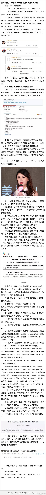

很多事情啊，讲个分寸。度把握好了什么都好说，度把握不好容易出事。我这里啊，一直其乐融融。开玩笑什么也都没事。不过开玩笑的时候还是要有分寸，否则引起其他人反感就没必要了。每天糟心事儿还不够多啊，还来网上添堵。所以以后就都客气点吧。不然您哪天突然没法跟大家交流了就可惜了。
可能是借了现金贷。@蓝鲸TMT网:【贾跃亭妻子刷卡额度2000元 却开万元月薪请家教】贾跃亭在接受采访时曾说“小薇的卡被冻结，只能刷2000块”可如今额度两千的甘薇，却要出万元月薪为孩子聘英语家教。据悉贾跃亭已被法院列入了“老赖”名单，根据规定“老赖”的子女不可以就读高收费私立学校。（每日经济新闻） 
被那么多人看到的风险就不是风险。真正的风险来自于非常不起眼的地方。突然长大，引爆全场，花火般美丽。//@曹增辉:转发微博@21世纪经济报道:【钟伟：国人将要面对的灰犀牛】包括精英阶层在内的许多国民可能会面临这种感慨，即中国经济日益繁荣，民众生活显著提升，但也会面临这样的困惑，世界越来越精彩，挣大钱却越来越艰难。为什么？网页链接
回复@取个名字真TMTMD难:有区别的。很多小盘股肯定是不行了，没那么多钱去炒它们。但是中小盘股里有好东西，现在很多人开始发掘这个了。我们的创业板指数可以说是最好的100只创业板指数，500指数算是最好的500只中盘指数。这跟那些三无的垃圾完全不同。@ETF拯救世界:再说一次，谁看不起小股票，下波牛市至少少赚一半